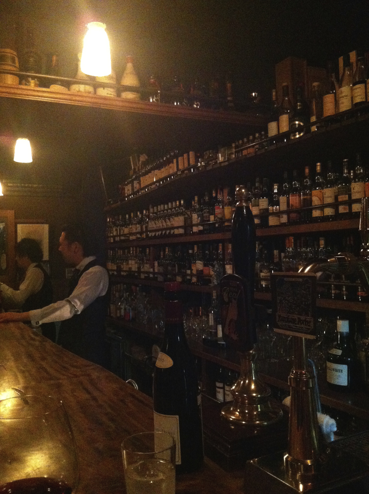
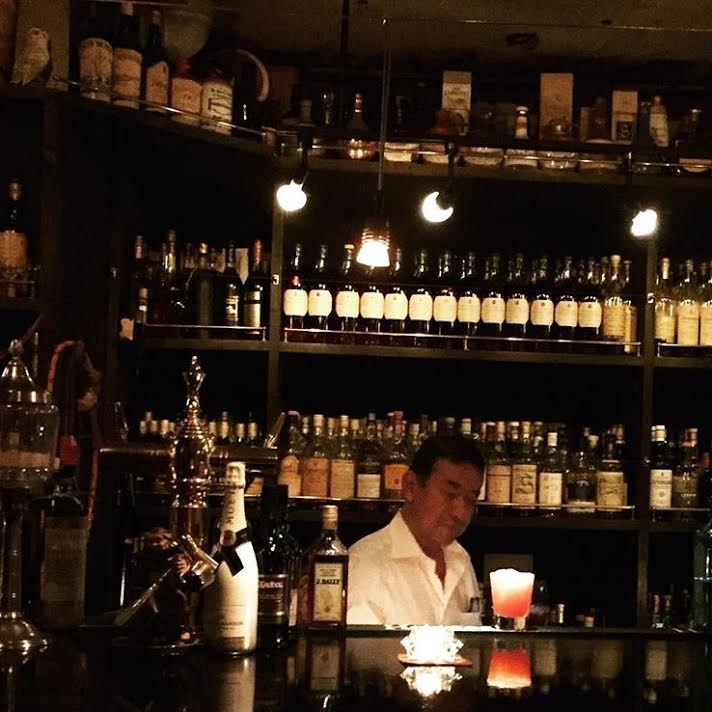
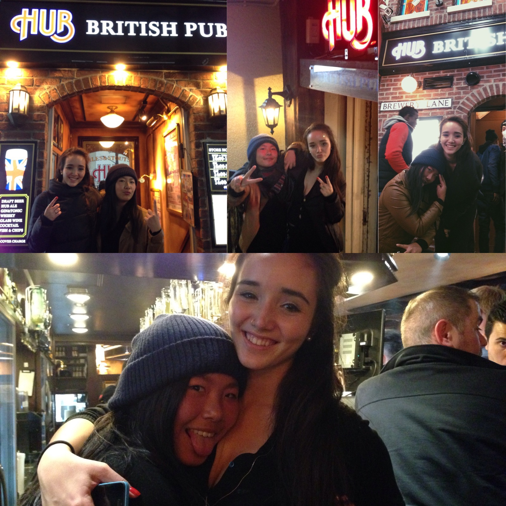
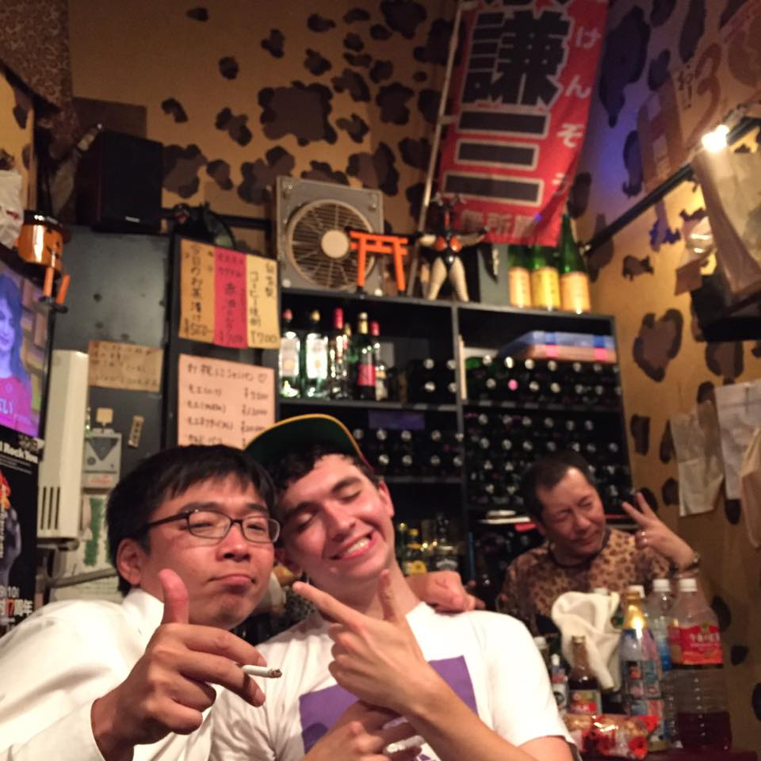
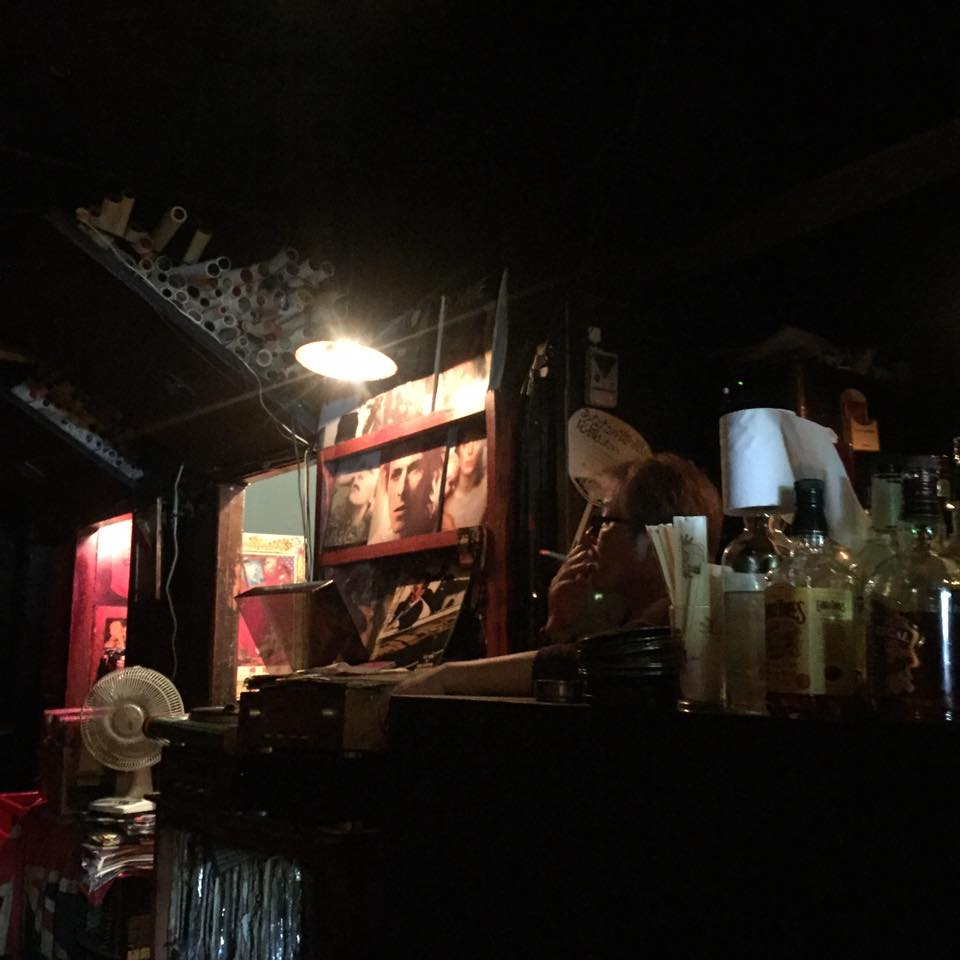
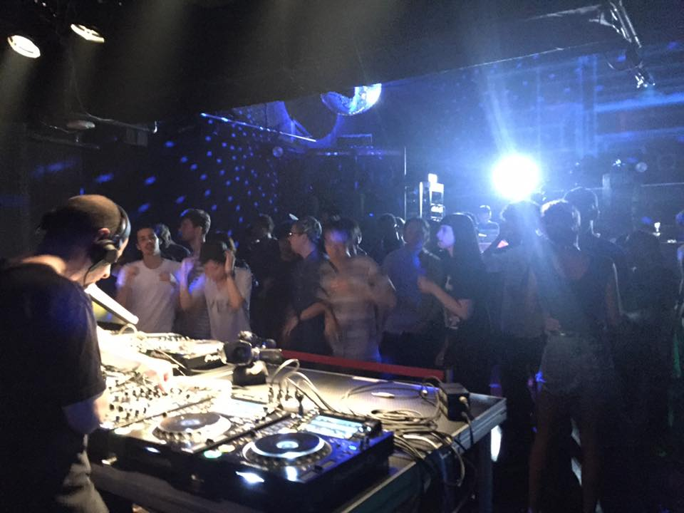

Speyside Way, Jiyugaoka

Bar Blue in Ebisu, has amazing fresh fruit cocktails

If you're looking for gaijin (foreigner)banter, look no more, find a Hubs anywhere--Shibuya, Shinjuku, Ebisu, Harajuku, YOU NAME IT!

One of the many bars in Shinjuku's Golden-Gai District, this is Kenzo's Bar with the leopard print. You can find his place with the leopard print door...

This is Trouble Peach in Shimokitazawa--where they have amazing vintage clothes and vinyls. Really low-key, plays a lot of Bowie songs, try the Trouble Peach cocktail!

Not a bar but Contact is a really great electronic/house venue in Shibuya. It's hard to find as it's underground and behind a parking garage but highly recommend this place!